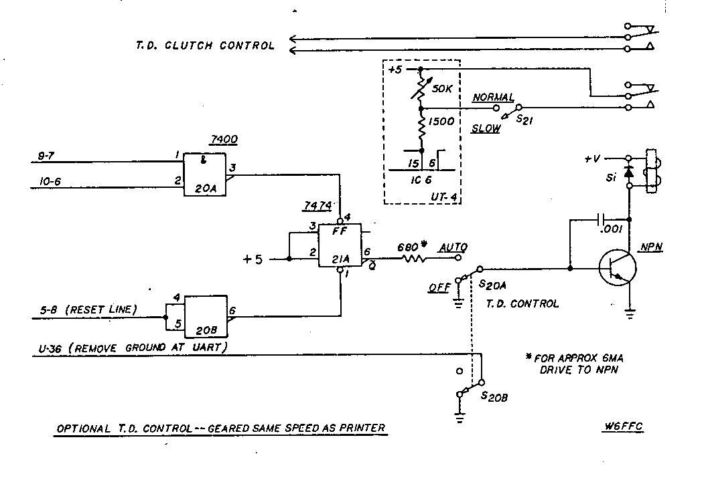
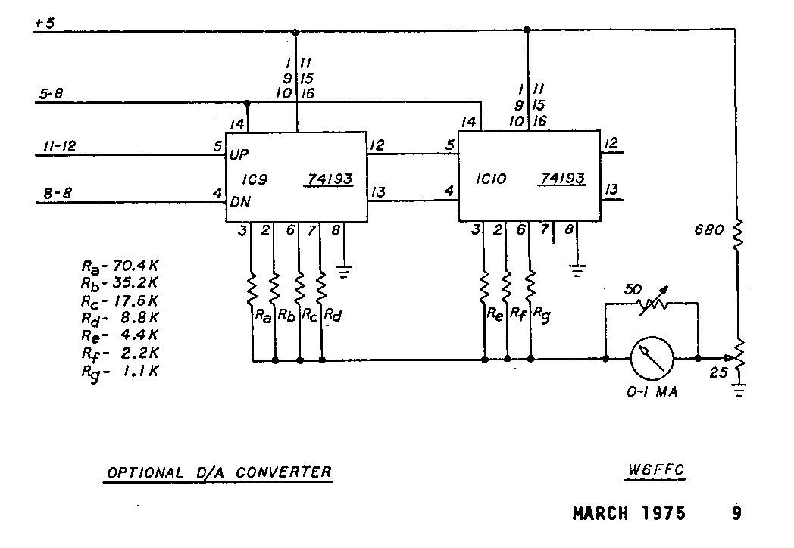
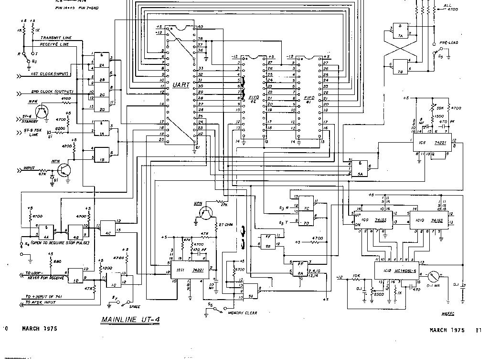
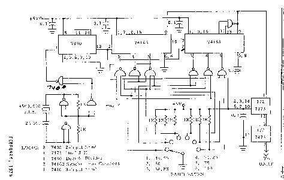

IRVIN N.HOFF, W6FFC, March 1975
INTRODUCTION:
The Mainline UT-2 was described in May 1975 RTTY JOURNAL
issue. It is essentially a regenerative repeater utilizing the
UART chip. With a second clock it can be used as an up (or down)
converter, both for transmit and for receive. If used as a down
converter, the input speed cannot exceed the maximum character
rate of the output speed, otherwise it would over-run with loss
of characters.
The Mainline UT-4 adds buffer storage, virtually eliminating over-run possibilities with hand typing. It also offers visual display of buffer quantity. An integral delay system offers the operator the ability to select an output rate that gives a steady, uniform transmission speed. The system effectively brings the computer age to the typical RTTY enthusiast.
BASIC DESIGN PHILOSOPHY:
Most RTTY operators hand type approximately 40-45 WPM.
Even so, the techanical limitations on the keyboard of the
machine sometimes prevent the operator from typing as well as the
other guy might. The idea behind the Mainline UT-4 was to allow
the operator to type as fast as he cares to, in as jerky a manner
as he likes, while selecting an output that keeps characters
backed into the buffer memory enabling a continuous and steady
output speed. This makes it possible for the operator to type
easy words rapidly and yet slow down on those that are more
difficult without affecting the output speed at all. Those who
have heard such a system being used are instantly aware that
"something is different". The effect is similar to that
of a slow-running tape distributor, yet no tape is being used.
ADVANTAGES:
When the operator can select his own output speed, it
usually allows him to make fewer errors than when he is trying to
approach machine speed. The system allows him to use 100 WPM
gears if he is really a fast typist or otherwise has found the
mechanical limitations of the 60 speed gears detrimental to his
typing style. Even with 60 speeds gears, the machine can receive
100 WPM hand typing with no loss of characters if the person
typing is not averaging over approximately 64 wpm. The operator
can also transmit at 100 WPM with his machine geared for 60 WPM,
although his maximum actual output speed would be that of the
printer itself, or about 60 wpm, due to keyboard limitations.
This would allow for the first time a reasonable intermix of
various speeds with printers geared for one specific speed. A
number of other interesting possibilities come to mind - - with
the optional Transmitter Distributor (TD) control system, a
person can send a CQ tape at the same speed he plans to hand-type
during the QSO -- this in itself offers a most interesting
phenomena of advertising in advance what the other person could
expect from your typing. Of course the output speed could be run
quite slowly to conserve paper if a lengthy CQ were needed. These
are some of the more obvious possibilities available.
FUTURE POSSIBILITIES:
The Mainline UT-4 was deliberately kept about as simple
as it could be and still operate within the basic design
philosophy. A wide variety of interesting additional features
could be added. For instance, a "diddle generator" that
would automatically insert letters characters (or 'figures' if in
upper-case) if the buffer storage became empty. This would fake
machine speed regardless of what the operator was doing. An
"anti-diddle" unit could be added that would ignore all
superfluous letters (or figures)characters not actually needed to
put the machine in upper or lower case. A feature could be added
that would allow the operator to flip one switch and continuously
repeat whatever was currently in the FIFO storage, up to the 80
character limit -- for instance you could type a line of CQ and
your callsign then just sit back and watch it type that same line
again and again - - when you turned that switch back to normal
position you could continue typing on the next line while it was
finishing the present line, making no interruption of the
transmission at all.
Other interesting applications will certainly be developed by operators using the device.
SOLID-STATE KEYBOARDS
Computer-type keyboards are usually 4-row
"ASCII" encoded. Many of these are showing up on the
surplus market at prices that interest many RTTY operators. It is
only a matter of time until amateurs will be allowed to use the
8-level ASCII code, but in the meantime, it is possible to use
these keyboards with Baudot output. Cole Ellsworth W6OXP has been
developing such a system to use with the UT-4. In this case he
converts from ASCII-to-Baudot and then stores the Baudot
characters in the FIFO memory. This enables him to run the input
speed to the UART at anything he likes that is commensurate with
the full-N rollover capability of the ASCII keyboard. A report on
his work should appear before long.
The Hal Communications dual-mode 2010 keyboard may be easily used with the UT-4. The keyboard would be placed on the 100 WPM speed and then the built-in character counter would accurately show when to CR-LF regardless of your typing speed. The status indicator on the UT-4 would show if you needed to adjust the output rate or not.
MEMORY SIZE:
The FIFO units used in the UT-4 are the Fairchild 3351
type. These are 40 characters by 9 bits wide. They will be
suitable in future years for use with 8- level ASCII keyboards.
Two of these units are shown in the schematic, but additional
units could easily be added between the two shown, in a similar
manner. The status indicator is wire for up to 128 characters, so
a third FIFO could be added with virtually no other changes.
CURRENT REQUIREMENTS:
Approximately 600-650 mils of current at 5V will be
needed if the XB-6 with dual output clocks is added to the UT-4.
The voltage should be adjusted for as close to 5.0 volts as is
convenient. The limits are 4.5 to 5.5. volts for proper
operation. Approximately 10 mils of -12V is needed for each FIFO,
making a total of about 25-28 mils needed, including the UART.
THE RECEIVE-TRANSMIT SWITCH:
If a DPDT toggle switch is used for S-3, the second pole
may be wired to turn the transmitter on or off, giving a "1-
switch transmit control". The transistor connected to the
standby line keeps the motor on during transmit should the
operator be using normal autostart.
METER POSITION:
The status indicator should be placed as near the
operator's normal line of vision during typing, as possible. This
may well indicate it would not go on the same cabinet that
contained the rest of the unit, but perhaps in a small enclosure
placed directly to the side of the teleprinter. The larger the
meter movement the easier it is to just glance at the quantity of
characters currently in memory. Lamps of course can easily be
added to the output of the unit to show empty, full, partially
full or whatever you like.
THE PRE-LOAD SWITCH:
The S-5 switch (pre-load) allows the operator to type
ahead and fill the buffer if in transmit mode. During receive,
the switch will stop the output to the printer and store the
characters in the FIFO while the operator quickly changes the
roll of paper. An optional switch (S-8) called the "repeat
switch" may be added that would allow continuous repeat of
whatever was pre-typed, such as "RYRYRYRY" or "THE
QUICK BROWN FOX" or "CQ CQ CQ", etc. This would be
a DPDT switch. The wiper arm of one pole would go to pin 10 of
IC-1d, the normally closed contact to the wire presently shown
hooked to that pin, and the other normally open contact to plus 5
volts. The wiper arm of the second half of the switch would hook
to pin 2 of IC-la and the 4700 ohm pull-up resistor would hook to
that same pin. The normally closed contact would connect to the
end of tne 8200 ohm resistor presently shown hooked to pin 2. The
normally open contact would hook to pin 9 of IC-1d. The following
routine would then be used:
When step 6 has been completed, the text starts to be transmitted. It will also now appear on the local printer copy. When you wish to terminate the repeated line, just return the repeat switch S-8 to normal, the local copy immediately stops although the buffer will continue to output until empty - - and you can again type into the buffer getting local copy on the printer. This is one of the many optional things that can be added to the UT-4.
CAUTION: This S-8 switch would only be useful if the input Baud rate and output Baud rates are the same!
THE SPACE SWITCH:
Closing S-7 (space switch) causes the output of the AFSK
or FSK to go to steady space tone. This is needed to set the
shift properly. A full-shift compatible C.W. ident device can
also be added at this point if desired.
NO IC-3:
There is no IC-3 in the UT-4. That is used in the UT-2,
and since it is some what different in the UT-4, it is called
IC-4 instead to avoid confusion. Therefore you will not find an
IC-3.
HOOKING TO THE ST-6:
The interface between the ST-6 and the UT-2 will be
similar to that for the UT-4. The UT-2 schematic in the February
1975 RTTY JOURNAL must be used to observe these connections.
HOOKING TO THE ST-5:
If the ST-5 is used a similar hookup to that of the ST-6
would be incorporated, except do not hook the standby line to the
NPN transistor unless it is another MJE-340 - - the standby line
on the ST-6 is approximately plus 12 volts and is regular loop
voltage on the ST-5. If that point is connected, the S-8 switch
mentioned in the pre-load section would not allow local copy in
the repeat mode.
CIRCUIT DESCRIPTION:
An incoming signal goes through the slicer (mark
positive) and is inverted in the transistor to a mark low. It
then goes into pin 5 or IC-1b, and is again inverted to a mark
high on the output. The UART is then triggered with this signal.
At the completion of a character, the data appears on the output
lines (all 8 are shown connected for eventual 8-level ASCII use).
The data available flag U-19 goes high, initiating the transfer
of the character into the FIFO storage buffer. This U-19
"high" triggers the first one-shot of the 74221 IC-11.
The "not Q" output is used to reset the data available
flip-flop U-18 via IC-4c andlC-4b. The "Q" output is
used to strobe the character into the FIFO registers. At this
time the character is automatically transferred through the FIFO
and the data available flag F-12 goes high indicating a character
has been removed. The same pulse that reset the data available
flip-flop (U-18) via 4c and 4b also pulses the up-counter (pin 5
of IC-9) showing on the status indicator that a character has
been received. The 4- input NAND gate 5a is now activated putting
an immediate low to both the IC-6 and to IC-7d. Since we are in
receive, we shall ignore IC-6 at present as its output is
inhibited by a low at pin 12 of IC-7c. Therefore IC-7d goes low,
tripping the IC-8a flip-flop. This in turn strobes the character
into the transmit side of the FIFO via U-23. It also operates the
other section of the flip-flop one clock pulse later, which in
turn resets the first section while operating the down-counter,
showing the character has been removed. At the same time the
output strobe of the FIFO is reset, putting a low on the data
available line, turning off IC-5a. While the character was being
transferred into the FIFO, U-22 went temporarily low showing a
transfer was in progress, and while the character was actually
being outputted through the transmit section, U-24 went low. As
all of these are connected to IC-5a, it would not be possible for
another character to be sent to the transmit section of the UART
no matter how fast the characters would be stored into the FIFO.
Only when all inputs to 5a go high can another character be
processed.
On transmit, IC-7c is activated instead of IC-7d, and now the dual one-shot delay IC-6 enters the picture, delaying the pulse to 1C-7a. for a period adjustable by the 50K delay pot. With the 5 Mfd. capacitor chosen, and outputting at 45.45 Baud, the output speed may be varied from approximately 30-64 wpm, at the operator's selection. A larger capacitor may be used to slow the output further if desired, although 30 wpm is already quite slow for all but a beginner on RTTY.
The pre-load switch utilizes a "bounceless" arrangement as the logic chosen only needs about 15-20 nanoseconds to activate.
REQUIRED STOP-PULSE:
You can experiment with switch S-4 and see if you prefer
incoming signals to have a stop pulse or copy them as long as the
UART thinks it received a valid start pulse. Many operators think
they prefer to leave this switch closed, but a few like the
required stop pulse. You have the option of doing which one you
prefer on the UT-4.
ONE MEASUREMENT:
When in mark, measure the voltage at pin 2 of IC-la. It
should be less than plus 0.4 volts - - if not change the 8200 ohm
resistor to a value that gives approximately zero volts when the
FSK line is connected.
THE AUTO RESET:
When the FIFO has had characters and then becomes empty,
the voltage at F-12 goes low and stays low, activating the auto
reset at pin 2 of IC-l1. This in turn triggers the output of the
memory clear 4-in put NAND gate IC-5b, resetting the status
indicator to zero. The purpose of this system is to make certain
the status indicator shows zero at any time the FIFO is empty.
This guards against occasional possible meter errors due to RF
glitches, etc. Again pulses as short as 15-2O nano- seconds can
activate the up-down counters (IC-9 and IC-l0) so this acts as a
back-up device.
THE D/A CONVERTER:
The interesting feature about the IC - 12 chip is its
ability to take binary input counts from the 74193's and change
them into a linear output current. To set the status indicator
(0-1 ma. meter), you would just hit the pre-load switch and allow
the unit to copy until the FIFOs were obviously full. The 2500
ohm pot would then be adjusted to indicate full scale and you are
finished. Thereafter the meter would indicate the amount of
characters in the FIFO. With an empty FIFO, the meter might not
show exactly zero due to a very small residual current at that
time. The mechanical zero on the meter face could be used for
this purpose. The D/A (digital to analog) converter is shown
connected for up to 128 characters. As it is an "8-bit
converter" it could be wired to accommodate up to 256
characters with individual increments.
OPTIONAL D/A CONVERTER:
The optional D/A converter uses fixed-value resistors.
They are considerably cheaper than the $6 Motorola D/A chip and
some builders have expressed an interest in saving the money. The
25 ohm pot adjusts the meter for zero with empty buffer, and the
50 ohm pot adjusts the meter when the buffer is obviously full.
T.D. CONTROL:
The T.D. must run at the same gearing the printer has.
If the printer is set for 100 WPM, the T.D. must be also, in
order to get local copy. The input to this system is hooked to
the up-down counters so that when the FIFO gets almost full the
T.D. is shut off until the FIFO units are empty at which time it
automatically starts up again. This keeps the FIFO from over
running. Since you will be outputting while the T.D. is running,
it will take longer for it to cycle on and off than might first
be expected. Switch S-21 gives an interesting use of the T.D. --
when in normal the T.D. can run at 8.0 unit code output due to
the ungrounding of the UART's U-36 pin. If the S-21 is in
"slow" position, then the output of the UART is the
same speed as that used during hand typing - - for the first time
you can use the T.D. to call CQ at the same speed you intend to
hand type! You can close the S-21 switch and immediately speed
the output up to normal output rate. If you use only a 60 wpm
printer and 60 wpm T.D. there is no necessity in ungrounding U-36
as the T.D. would then run its usual 7.42 output speed. The U-36
arrangement was added primarily for using 100 wpm T.D. units
where the output speed would then be that of the UART itself.
TROUBLE-SHOOTING:
While receiving, a voltmeter or scope (D.C. type) could
be used -- the output of the slicer at point AA is about plus 11
on mark and about minus 11 on space. Pin 5 of IC-lb should then
go low (about 0.2 volts approximately) on mark and around 4-5
volts on space. Pin 20 on the UART should go high (4-5 volts) on
mark and low (around 0.2-0.5 volts) on space. If the clock speed
is normal at pin U-17, the data pins U-8 through U-12 should
alternate at least occasionally, depending upon what characters
are being received. If they do, then the UART is no doubt working
correctly. The output of many of the other points of interest is
so short duration it may be all but impossible to see if they
work normally or not. For instance the output at pin l2 of lC-6
and IC-l1 is on the order of 1.5 microseconds. A meter would not
show this and it would take a rather fast, triggered scope to see
it as well. Unless you are fairly adept at checking logic
circuits, there would be a distinct advantage in buying brand new
components from a reputable dealer. Apparently some of the
surplus places selling IC's for low cost do not bother to even
test the items to make sure they are not shorted or defective.
The more expensive IC's at least should be mounted in Molex pins
so they could be readily removed if needed.
P.C. BOARDS:
An unusual amount of interest has al ready been
generated in the Mainline UT 4. Most of those active on the west
coast autostart net (3612.500 KHz.) are already using this
device. Two of the fellows participating on that net have PC.
boards available. One source is Clyde Keenari K7WTQ in Lakebay,
Wash. The other source is Jim Page WA7ARI who is calling his firm
EDI, for Electronic Development, Inc. He plans to not only offer
boards that are drilled, plated through (requiring no jumpers),
but also hopes to have available a complete kit of all parts
needed. Check the classified ads in this and future issues. No
other source of boards is expected to be available.
THE RM-200:
Howard Nurse W6LLO was the first amateur known by the
author to use the UART/FIFO combination. He is a very competent
independent design engineer. After hearing his unit some time
ago, the author urged him to produce it for amateur use. This has
been delayed somewhat because of other more pressing business
matters, but the RM-200 represents a much more sophisticated
device than the UT-4. It uses 5 PC boards and among other
features offers a diddle generator, an anti-diddle unit to remove
superfluous letters (or figures) characters, interrupt inputs and
other unique features. Howard hopes to soon publish further
details on the unit.
ACKNOWLEDGEMENTS:
A large number of people have been interested in this
project from the beginning. It Is difficult to try to give credit
where it is due without overlooking or slighting someone. Several
people stand out in particular: Howard Nurse W6LLO whose
comments, suggestions and advice have been most helpful. Steve
Klingler WA5GRE/5 whose beautiful drawings appear in this issue.
Clyde Keenan K7WTQ whose work with the reproduction of those
drawings was greatly appreciated. Cole Ellsworth W6OXP who made
the original work by the author available to over 100 interested
enthusiasts. Pete Bertelli who has made it convenient to obtain
the integrated circuit chips needed. Barry Simpson WA7HJR who
built the first unit after the prototype was completed. Karl
Hatfield W6BXR who was first to try the T.D. control section.
Peter Morley K6SRG whose support and Xerox machine have been most
helpful. Many others have contributed comments and suggestions
and include W1HAB, K2SMN, K4CZ, KL7HOH, K5UAR, WASIAT, K4EID,
WA5NYY and WA7RQV. This has certainly been an interesting
undertaking and the enthusiasm and co-operation of all those
mentioned could hardly have existed on any other mode of amateur
operation.
SUMMARY:
The Mainline UT-4 was designed to allow the operator to type
at a keyboard speed comfortable to him whether 60, 75 or 100 wpm,
and to adjust the output speed for the Baud rate being used so
that some characters would remain in the buffer allowing even and
steady output speed. In addition the unit allows up/down
conversion regardless of printer speed as well as improved
reception and transmission at minimum distortion. It helps any
printer to receive and transmit equal to the very best units
available.
(Last Minute Addition)
(This addition was developed too late to incorporate into the
main drawing.)
If the up-down counters are on zero and a false count is received, the counters try to "go around" to 255 counts. This would be 127 counts on the configuration used on the UT-4 so the meter would try to pin at full-scale. Although this rarely has ocurred a simple solution has been developed that prevents this happening.
First remove pin 12 of IC-5b from plus 5 volts. Next install a 4700 ohm resistor from this now vacant pin to plus 5 volts. Also connect this same pin l2 to the output (pin 3) of IC-4d. Connect the two input pins (1 and 2) of IC-4d together and attach to pin 7 of IC-10. (That's all.)
Explanation. If the counters ever attempt to "go around" on a false. down count, this system will reset their clear lines to zero automatically. (This addition is incorporated in the P.C. boards previously mentioned.)
NOTE: Use your right mouse button on your browser, click on the schematic to save them and view them on your full sized monitor or to print them. Each diagram is much larger than what your screen will allow.



